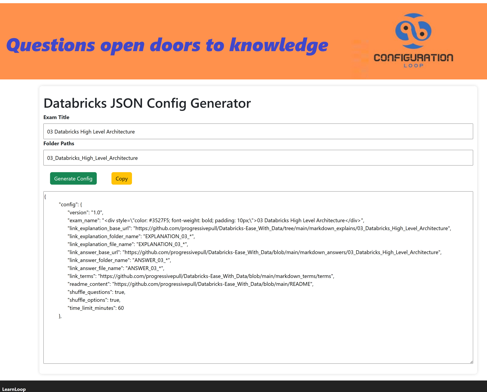
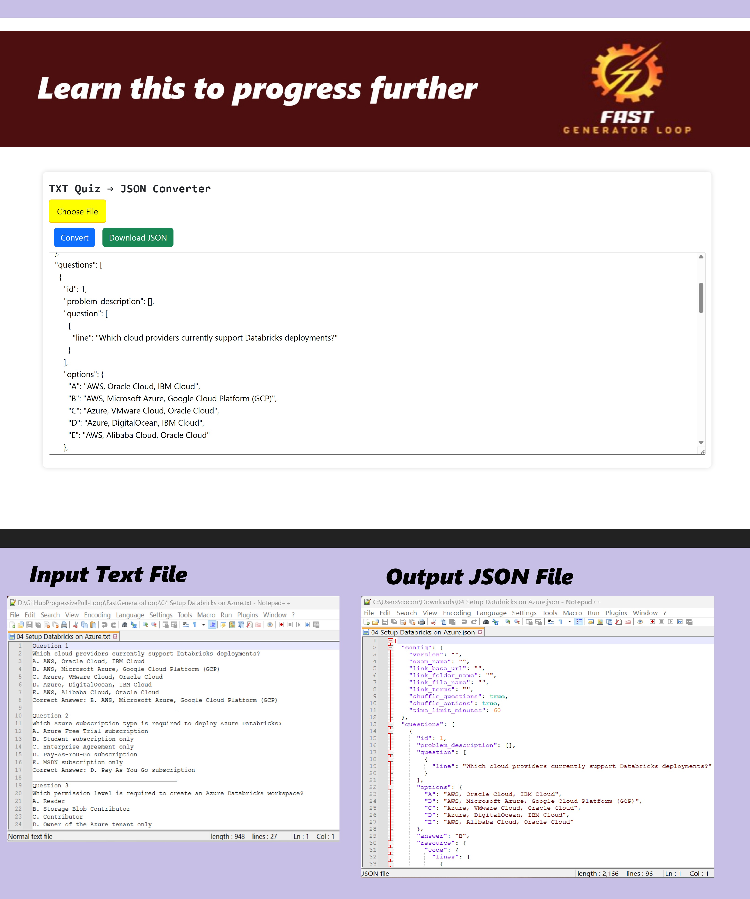
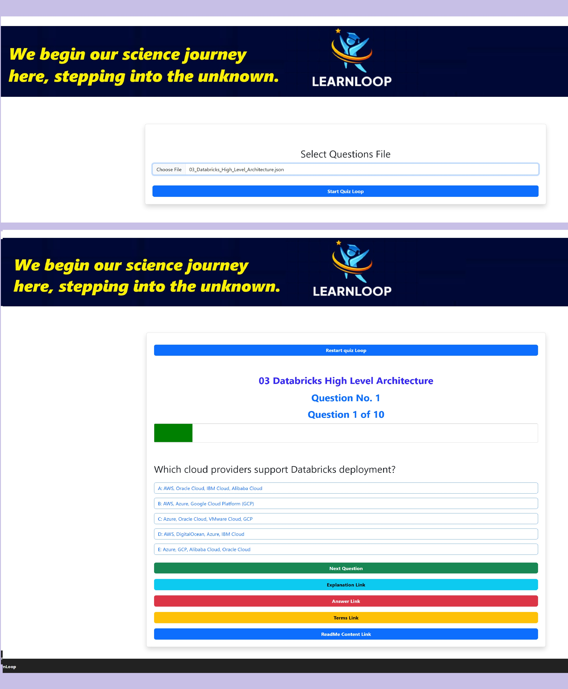
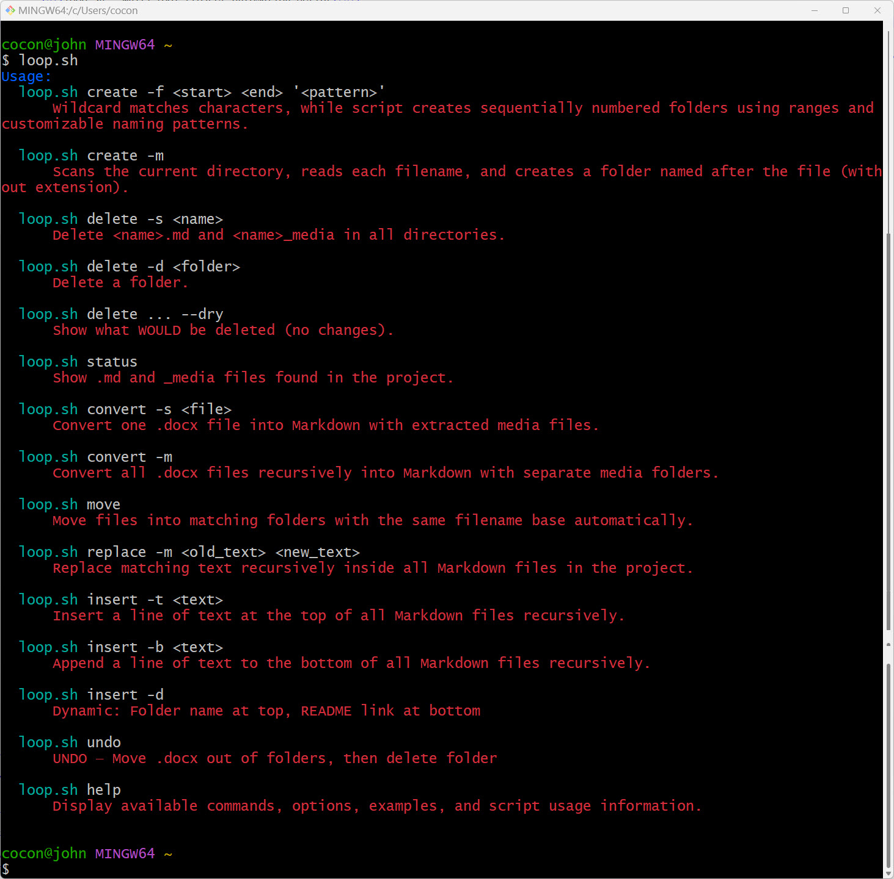

| Description |
Screen Shot of Website |
Flashcards Editor
FlashGeneratorLoop Application
FlashGeneratorLoop GitHub Sites
The Flashcards Editor is a browser-based web application for creating, editing, managing,
and saving flashcard data in JSON format. It provides a simple interface that allows users
to maintain a collection of study cards without requiring a database or server-side application.
Key Features
-
Load JSON Files:
Users can import an existing JSON flashcard file using the file upload control.
The application validates that the file contains a
cards array before loading it.
-
Create New Flashcards:
Users can enter a term and definition and add a new flashcard to the collection.
Each new card is automatically assigned the next available ID.
-
Edit Existing Cards:
Each flashcard displays editable fields for its ID, term, and definition.
Changes are immediately reflected in the application's data.
-
Delete Cards:
Users can remove individual flashcards using the Delete button.
-
Save Flashcards:
The application converts the current flashcard collection into formatted JSON
and downloads it as
cards.json.
-
Client-Side Operation:
Flashcard data is managed directly in the browser using JavaScript,
with no server-side storage required.
|
 |
Flashcards Viewer Application – How to Use
Flashcards Application
FlashCardLoop GitHub Sites
This simple flashcard tool lets you study terms and definitions from a JSON file.
Getting Started
Click the file button and select a JSON file that contains your flashcards.
Once the file loads, two buttons appear: Flash Card and Load All.
Study Mode (One Card at a Time)
- Click Flash Card to see the current card’s ID and term.
- Click Definition to reveal the answer.
- Click Next to move to the next card (it loops back to the first card when you reach the end).
View Everything
Click Load All to display every flashcard on the page at once,
showing ID, term, and definition for each one.
|
 |
Split Microsoft Word Document
SplitWordLoop Application
SplitWordLoop GitHub Sites
Split Microsoft Word Document is a simple, browser-based tool for dividing a Word
.docx file into multiple smaller documents. Upload a file, choose how you want it
split, add an optional output filename prefix, and download the resulting documents.
What It Does
The application helps users break large Microsoft Word documents into separate files without
needing to manually copy and paste content.
How to Use It
- Select a Microsoft Word
.docx file from your device.
- Choose the desired Split Word — this is the keyword the application will search
for inside the document to determine where the file should be divided.
- Optionally enter an Output Prefix to help name the generated files.
- Select Split Document.
- Download the newly created Word files.
Key Benefit
It streamlines document organization by turning one large Word file into a set of clearly named,
manageable documents—saving time and reducing the risk of formatting issues caused by manual editing.
|
 |
How to Generate Your Exam Config Temple
ConfigLoop Application
ConfigLoop GitHub Sites
Instructions for Users
1. Enter the Exam Title
In the Exam Title field, type the full name of the exam or chapter.
Example: 03 Databricks High Level Architecture
2. Enter the Folder Path(s)
In the Folder Paths field, enter the folder location(s) containing the exam materials or source files.
3. Generate the Configuration
Click Generate Config. The tool will:
- Extract the leading chapter number from the title, if present.
- Convert the exam title into a filename‑friendly format by replacing spaces and separators with underscores.
- Build a JSON configuration using the title and provided folder path(s).
4. Review the Generated JSON
Verify that the exam name, chapter number, normalized folder name, and all paths are correct before using the file in another system.
5. Download or Copy the Result
Save the generated configuration as a .json file, or copy its contents into the configuration location required by your workflow.
Final JSON Template Upload
After generating the configuration, do not upload the configuration block by itself.
Instead, insert the generated config section into the final exam JSON template, which must contain both required top‑level elements:
1. Top‑level config object
This object must include exam settings such as:
- Exam titles
- URLs and folder names
- Shuffle settings
- Time limit
2. Top‑level questions array
This array must contain all multiple‑choice questions for the exam.
Required File Structure
The final upload must be a valid .json file following this overall structure:
{
"config": { ... },
"questions": [ ... ]
}
|
 |
Text Quiz File -> JSON File Converter
FastGeneratorLoop Application
FastGeneratorLoop GitHub Sites
This tool converts a plain text (.txt) file containing quiz questions into a structured JSON file.
Step 1: Format Your TXT File
Your text file must follow this pattern for each question:
Question 1
What is the capital of France?
A. London
B. Paris
C. Berlin
D. Madrid
Correct Answer: B
Question 2
Which planet is known as the Red Planet?
A. Venus
B. Mars
C. Jupiter
Correct Answer: B
Formatting rules:
| Element |
Rule |
| Question start |
Must begin with the word Question followed by a number (e.g. Question 1, Question 2). Not case-sensitive. |
| Question text |
Any line(s) between the "Question #" line and the first option. You can use multiple lines for longer questions. |
| Answer options |
Must start with a single letter A through E, followed by a period and a space (e.g. A. Paris). Up to 5 options per question. |
| Correct answer |
A line that starts with Correct Answer: followed by the letter of the correct option (e.g. Correct Answer: B). Not case-sensitive. |
| Spacing between questions |
A blank line or underscores (e.g. ______) between questions is optional — both are ignored. |
Notes:
- Questions are numbered automatically in the output — the number after “Question” in your text is not used.
- Only one correct answer letter is supported per question.
- Any unrecognized line is treated as extra question text.
Step 2: Convert the File
- Open the converter tool in your browser.
- Click Choose File and select your
.txt file.
- Click Convert.
- The converted JSON will appear in the output box.
Step 3: Download the JSON
- Review the preview.
- Click Download.
- The file saves with the same name but a
.json extension.
- If no file was selected, it defaults to
quiz.json.
Step 4: (Optional) Edit the Config Section
Every converted file includes a config section:
"config": {
"version": "",
"exam_name": "",
"link_base_url": "",
"link_folder_name": "",
"link_file_name": "",
"link_terms": "",
"shuffle_questions": true,
"shuffle_options": true,
"time_limit_minutes": 60
}
These fields are left blank or set to defaults — edit them manually after downloading.
Troubleshooting
- Download button stays disabled: Select a file and click Convert first.
- A question is missing: Ensure the line starts with
Question + number.
- An option didn’t get captured: Must be formatted like
A. Text.
- Correct answer didn’t register: Must be exactly
Correct Answer: X.
|
 |
Quiz App — User Instructions
LearnLoop Application
LearnLoop GitHub Sites
This app lets you load a quiz JSON file (the kind produced by the Quiz Converter tool)
and take the quiz interactively in your browser.
Step 1: Load Your Quiz File
- Open the quiz app in your browser.
- Click the file input field and select your quiz
.json file.
-
If the file loads successfully, it's ready to use. If it's invalid or missing required data,
check your browser's developer console for an error message.
Step 2: Start the Quiz
- Click the Start button.
-
If you haven't selected a file yet, a dialog will pop up asking you to choose one —
click OK, then select your file and click Start again.
-
Once a valid quiz is loaded, clicking Start takes you to the quiz screen
and loads the first question.
Step 3: Answer Questions
On the quiz screen you'll see:
- Exam title (if one is set in the quiz's config)
- Question number and a progress bar showing how far through the quiz you are
- Problem description (if provided) — extra context or background for the question
- Code snippet (if provided) — shown with syntax highlighting
- Question text
- Answer options as clickable buttons
To answer:
- Click the option you believe is correct.
-
You'll immediately see feedback:
- Green / “Correct!” if you picked the right answer.
-
Red / “Wrong! Correct answer is X” if you picked the wrong one — the correct option
will also be highlighted in green.
- Once you've answered, all options become locked (you can't change your answer).
Step 4: Move to the Next Question
- Click Next to move on.
-
If you try to click Next before selecting an answer, a dialog will remind
you to choose an option first.
- After the last question, clicking Next takes you to the Results screen automatically.
Step 5: Optional Reference Links
Depending on how the quiz file's config is set up, you may see buttons to open additional
resources in a new browser tab:
- Explanation — a detailed explanation for the current question
- Answer — a reference answer page for the current question
- Terms — a glossary or terms/definitions page
- Readme — general background/readme content for the quiz
These links only work if the quiz file's config includes the matching URL settings —
if a button doesn't do anything, that resource likely wasn't configured for this quiz.
Step 6: View Your Results
When you finish all questions, the Results screen shows:
- Correct — number of questions you got right
- Wrong — number of questions you got wrong
- Score — your percentage score
Step 7: Restart
Click Restart at any time during the quiz to:
- Return to the start screen
- Clear the loaded file selection
- Reset your progress (correct/wrong counts and current question)
You'll need to re-select your quiz file to take it again.
Troubleshooting
-
Start button does nothing / dialog keeps appearing:
Make sure a
.json file is actually selected in the file input before clicking Start.
-
"Invalid JSON file" in console:
The file isn't valid JSON — check it opens correctly in a text editor and has no syntax errors.
-
Quiz loads but nothing shows on screen:
The file's
questions array may be empty, or missing the fields the app expects
(each question needs at minimum a question and options field).
-
Code snippet doesn't appear:
Code only displays if the question includes non-empty lines under
resource.code.lines.
-
Explanation/Answer/Terms/Readme buttons don't work:
These require corresponding URL fields to be filled in under the quiz file's
config section.
|
 |
DatabaseGeneratorLoop
Quiz Builder — User Instructions
DatabaseGeneratorLoop Application
DatabaseGeneratorLoop GitHub Sites
This tool lets you create a quiz JSON file from scratch using a form, or upload an existing quiz JSON file to edit it, then export the result as a .json file compatible with the Quiz App.
You have two ways to start: Create New or Upload Existing.
Option A: Create a New Quiz from Scratch
- In the question count field, enter how many questions you want to create.
- Click Generate Fields. A form section will appear for each question, numbered sequentially.
- Fill in each question block (see “Filling Out a Question” below).
- When you're done, click Generate JSON to download your quiz file.
Option B: Upload an Existing Quiz JSON
- Click the upload field and select your existing quiz
.json file.
-
The tool will automatically read the file and generate a matching form pre-filled with its questions,
descriptions, options, answers, and code.
- Make whatever edits you need (see “Filling Out a Question” below).
- Click Generate JSON to download the updated file.
Note: If the file is invalid or missing a questions array, you'll see an alert and nothing will load — check that the file matches the expected format.
Filling Out a Question
| Field |
What to do |
| Problem Description |
Optional context lines shown above the question. Click + Add Line to add as many lines as needed.
Leave blank if not needed.
|
| Question Text |
The question itself. Click + Add Line to add multiple lines — useful for longer or multi‑part questions.
|
| Option A–E |
Enter the text for each answer choice. You don't have to fill in all five — leave unused ones blank.
|
| Correct Answer |
Choose the letter (A–E) of the correct option from the dropdown. |
| Code |
Optional code snippet to display with the question. Paste or type it into the text box — each line is preserved.
Leave blank if not needed.
|
| Language |
If you added code, select its language (Python or SQL) so it displays with syntax highlighting.
Leave blank if there's no code.
|
Adding and Removing Questions
- + Add Question Section: Adds a new blank question block right after the one you clicked.
- Delete Question Section: Removes that question block entirely.
After adding or deleting, all questions are automatically renumbered — you don't need to fix numbering,
and all field IDs stay in sync behind the scenes.
Generating and Downloading Your Quiz File
- Once your questions are filled out, click Generate JSON.
-
The tool packages everything into a JSON file — including a config section with default settings
(exam name, links, shuffle options, time limit, etc.).
- Your browser will download the file as
template.json.
Tip: Rename the downloaded file to something more descriptive (e.g. chapter3-quiz.json)
and, if needed, open it in a text editor afterward to fill in config fields like
exam_name or time_limit_minutes.
Troubleshooting
-
Generate JSON button isn't visible:
It only appears after you click Generate Fields (new quiz) or after uploading a valid JSON file.
-
"Invalid JSON format" alert on upload:
The file doesn't have a
questions array — confirm you're uploading a proper quiz JSON file.
-
"Failed to parse JSON file" alert:
The file itself isn't valid JSON — check for syntax issues like missing commas or brackets.
-
A question's fields look empty after upload:
That question may be missing that field in the source file — normal if the original quiz didn't include it.
-
Options or answer didn't carry over:
Confirm the source JSON uses the expected structure — options as an object with keys A–E, and answer as a single letter.
|
|
loop.sh — Multi‑Tool Project Automation Script
LoopScript GitHub Sites
loop.sh is a flexible Bash automation utility designed to streamline project‑wide tasks such as creating folders, converting .docx files, moving files, replacing text, inserting content, and cleaning up Markdown‑based projects.
It supports recursive operations, dry‑run safety, colored output, and pattern‑based folder generation.
🚀 Features
- Create folders (pattern‑based or mirrored from filenames)
- Delete files or folders (with optional
--dry)
- Convert
.docx → .md (single or recursive)
- Move files into matching folders
- Replace text across Markdown files
- Insert text at top/bottom or dynamic folder‑based insertion
- Status scan of Markdown + media folders
- Undo: restore
.docx files and remove folders
- All: run a full automated pipeline
- Help menu with full usage instructions
|
 |